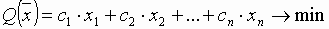
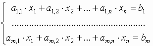
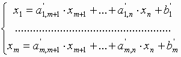
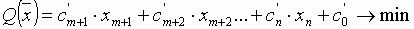
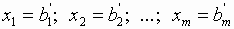
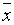
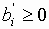

Симплекс-метод

Метод предназначен для решения общей задачи линейного программирования.
Пусть имеем следующую задачу:
,
с системой ограничений следующего вида:
.
Разрешим эту систему относительно переменных x1, ...,xm:
.
Векторы условий, соответствующие x1, ...,xm, образуют базис. Переменные x1, ...,xm назовем базисными переменными. Остальные переменные задачи – небазисные.
Целевую функцию можно выразить через небазисные переменные:
.
Если приравнять небазисные переменные нулю: xm+1 = 0, xm+2 = 0, ..., xn = 0, то соответствующие базисные переменные примут значения: .
Вектор  с такими компонентами представляет собой угловую точку многогранника решений (допустимую) при условии, что  (опорный план).
Теперь необходимо перейти к другой угловой точке с меньшим значением целевой функции. Для этого следует выбрать некоторую небазисную переменную и некоторую базисную так, чтобы после того, как мы “поменяем их местами”, значение целевой функции уменьшилось. Такой направленный перебор в конце концов приведет нас к решению задачи.
Вагенгейм Александр, ИСС-11